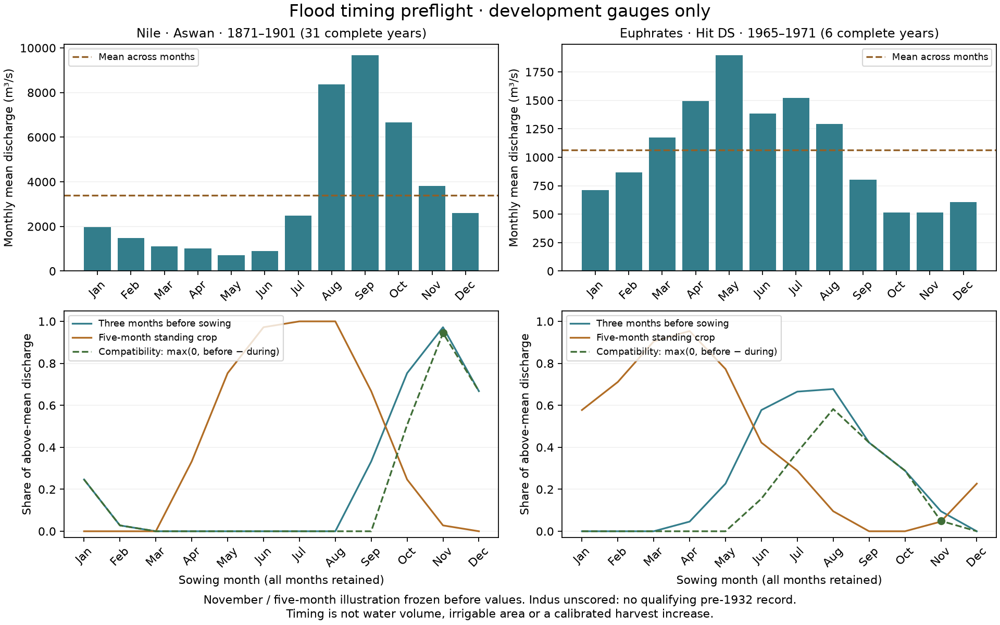

EARTH EVIDENCE · 13 NOVEMBER 2026
Can flood timing distinguish the Nile from Mesopotamia?
The development gauges show a strong seasonal distinction. The held-out Indus check is unscored. This is input preparation; the flood-basin irrigation rule has not been calibrated or adopted.
Why this matters
The current harvest model underproduces in Egypt. Low, nearby floodplain terrain identifies about 24,600 km² there, close to the historical cultivated area. The same terrain rule identifies 64,000 km² in Lower Mesopotamia, where the model already overproduces. Terrain alone cannot justify adding irrigation.
The Nile has high flow before winter sowing. The Euphrates peaks in May. This predeclared diagnostic measures how much above-mean flow occurs in the three months before sowing and how much overlaps the crop. It retains every sowing month and crop durations of three through nine months.
Fixed November illustration
For both development gauges, sowing in November and a five-month crop were declared before reading discharge values. Compatibility is max(0, pre-sowing excess share − standing-crop excess share): 0.944 for the Nile and 0.049 for the Euphrates. It is a dimensionless timing diagnostic, not a percentage of land irrigated.
| Gauge | Retained years | Complete years | Peak month | Compatibility |
|---|
| Nile · Aswan | 1871–1901 | 31 | Sep | 0.944 |
|---|
| Euphrates · Hit DS | 1965–1967, 1969–1971 | 6 | May | 0.049 |
|---|
| Indus · Kotri | 1900–1931 requested | Unscored | Unscored | Unscored |
|---|

Equal-weight means of complete years; units m³/s. Earlier local water management is not assumed absent. The Indus series starts in 1936, after the declared pre-Sukkur cutoff, so no regulated substitute is scored.
Source quality and independent checks
Aswan retains 1871–1901 before the first Aswan dam. Its incomplete 1869 and 1870 are excluded. Hit retains 1965–1967 and 1969–1971 before major Tabqa/Keban impoundment; every excluded year is listed in the results. These observations establish timing inputs, not ancient discharge or flood reliability.
Fifteen controls passed before output. Independent raw-HTML parsing, Decimal means and scalar cyclic arithmetic checked 1,469 observations, 168 season combinations and 504 phase values. Five rebuilt output files match byte for byte; 904 existing Earth atlas files remain unchanged.
plan.json · sources.json · review.json · controls.json · phase.csv · gauge_monthly.csv · fields.npz · results.json
What is still needed for the map
A water budget, flood delivery and travel times, drainage constraints, and defensible crop calendars. Fully watered crop seasons can tie in the current optimizer, so simply choosing the best timing window would introduce a hidden selection rule. A field rule and independent test regions must be declared before scoring irrigated areas or population capacity.
The published release-3 settlements and adopted marketed share 0.3923 remain current. The whole-empire supply calibration still fails because of Egypt. This preflight does not change those results.
Sources and attribution
- Vörösmarty, Fekete & Tucker (2004), Aswan Dam monthly discharge, PANGAEA.218345; RivDIS (1998), doi:10.3334/ORNLDAAC/199 (CC-BY-3.0)
- Vörösmarty, Fekete & Tucker (2004), Hit DS monthly discharge, PANGAEA.218668; RivDIS (1998), doi:10.3334/ORNLDAAC/199 (CC-BY-3.0)
- Dai (2025 update), doi:10.5281/zenodo.17379716; Dai & Trenberth (2002), Dai et al. (2009, 2025), as requested by dataset README (CC-BY-4.0, Zenodo record)
- Dataset documentation, doi:10.5281/zenodo.17379716 (CC-BY-4.0, Zenodo record)
Historical calendar context: Butzer (1984), long-term Nile flood discharge and basin agriculture. Numeric input hashes, publisher representations and licenses are in the source manifest.